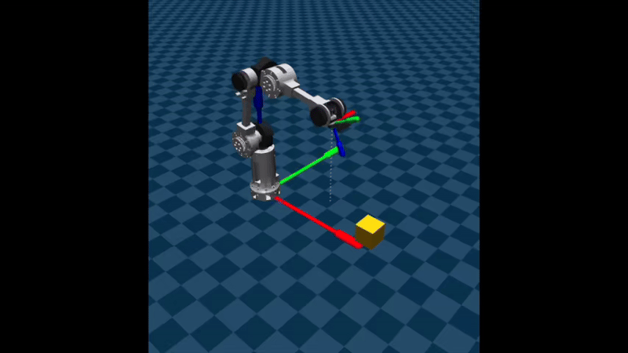
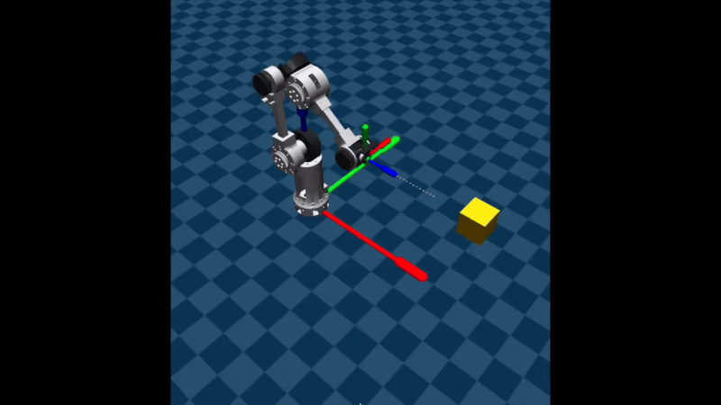
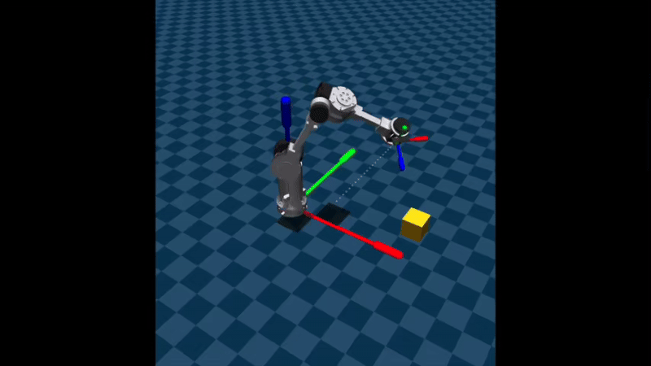
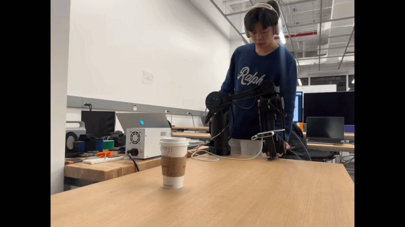

Demo
See IRIS in action.
IRIS — Cinema Shot Execution

Crane — Vertical rise while tracking a fixed subject

Dolly — Linear push-in / pull-out

Pan — Lateral arc sweep

Kinesthetic teaching — operator physically guides the arm

CVAE Full policy deployed on real hardware — 46.2% task success